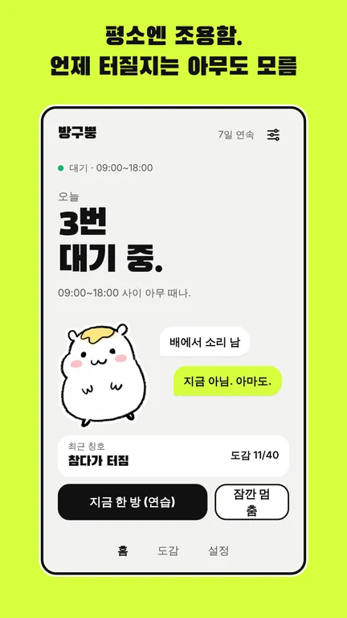
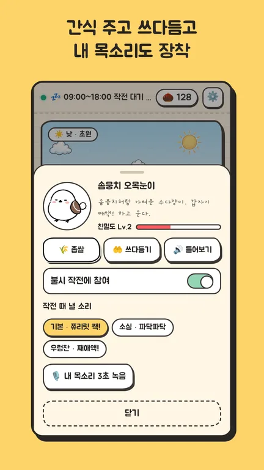
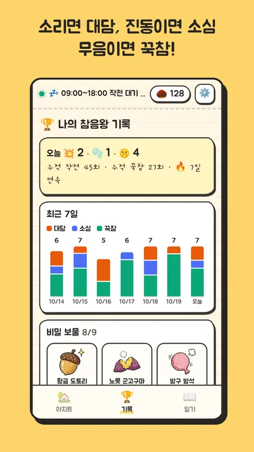
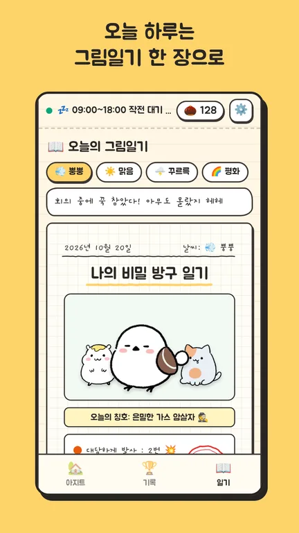
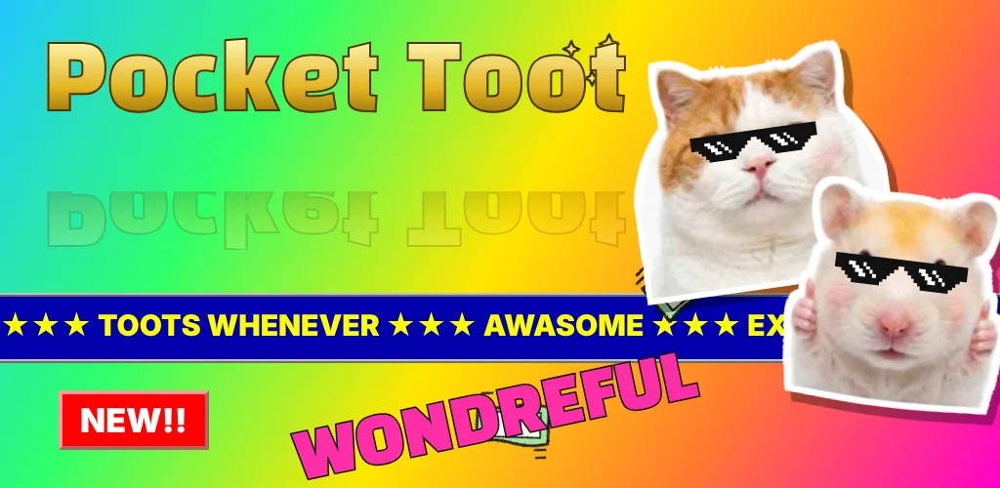
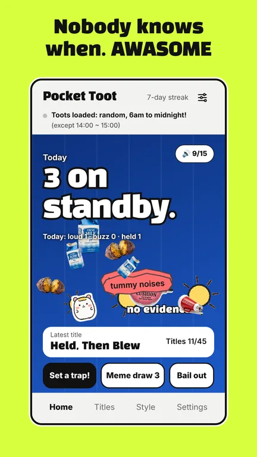
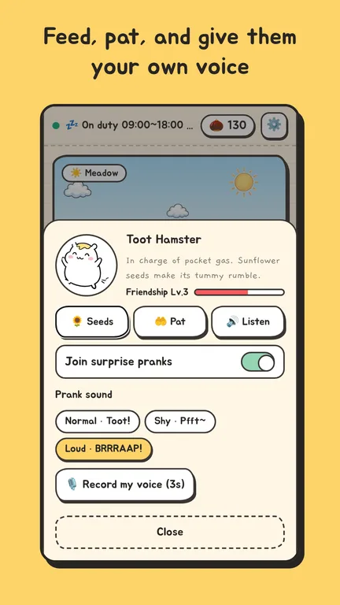
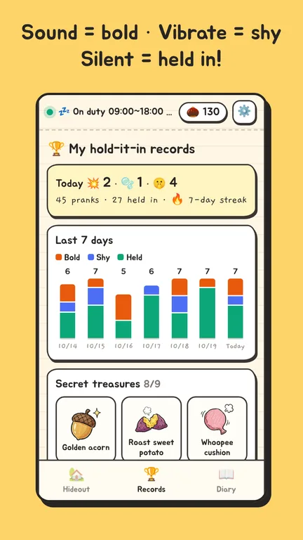
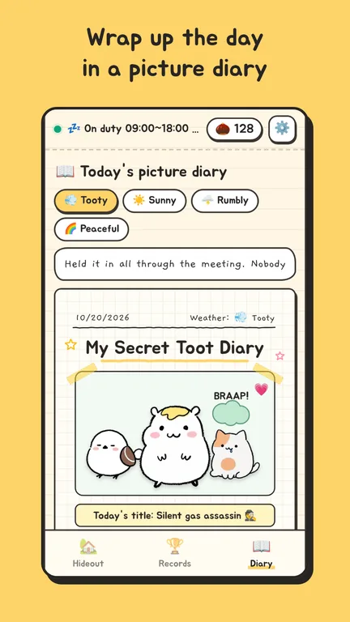

방구뿡
주머니 속에 햄찌 · 오목눈이 · 뚱냥이가 숨어 있어요. 정해 둔 시간대에 하루 몇 번, 불시에 소리를 내요.




그 순간 내 폰은
- 소리 모드대담 · 진짜로 소리가 나요
- 진동 모드소심 · 진동만
- 무음 · 방해 금지꾹참 · 도토리가 더 많아요
회의나 시험 중이라면 긴급탈출 한 번이면 다시 누를 때까지 모두 멈춰요.
살아 있는 아지트
친구들이 초원 · 노을 · 밤 · 미니룸을 돌아다니며 소품에 놀러 가요. 간식을 주고 쓰다듬으면 친밀도가 올라요.
아홉 가지 소리와 내 목소리
친구마다 작전 소리를 고르고, 3초 녹음으로 내 목소리를 장착할 수도 있어요.
진짜 기록으로 여는 보물
최근 7일 기록, 연속 기록, 꾹참 명예의 전당. 실제로 해낸 만큼만 아홉 가지 비밀 보물이 열려요.
하루를 그림일기로
오늘의 기록과 한 줄 일기를 크레용 그림일기 한 장으로 저장 · 공유해요.
조용한 앱
계정도, 광고도, 서버도 없어요. 기록은 폰 안에만 있고, 인터넷 없이 작동해요. 기다리는 동안엔 배터리를 거의 쓰지 않아요.
응원하기
잠긴 기능은 없어요. 마음에 들었다면 간식 한 봉지로 응원해 주세요. 한 번만 결제되고, 구독은 없어요.
- 해바라기씨 한 줌1,500원
- 츄르 한 봉지4,400원
- 세 친구 잔칫상9,800원
결제는 Google Play 가 처리하며, 개발자는 결제 정보를 받지 않아요.
출처
- 글꼴: 주아 (Jua), 개구 (Gaegu) · SIL Open Font License 1.1
- 소리: Freesound 의 CC0 (퍼블릭 도메인) 실제 녹음을 다듬어 썼어요. 방구 SilentStrikeZ, Jixolros, Zott820, bassimat, anndszjuvupftbim, BipolarBad, Gerent · 새 qubodup, JackWilDesign, Mastersoundboy2005, LilMati, nfrae, SieuAmThanh, Godowan, (탈퇴한 사용자), Raclure · 고양이 Zabuhailo, rickismyname, Reitanna, tuberatanka, steffcaffrey, skymary, Department64, RazzleDizzle, Richard1052 · 효과음 Zott820, Sojan, JarredGibb, Kenneth_Cooney, quatricise, qubodup · 배경 소리 myLoop, joanaseabra, blukotek
- 그림: 방구뿡을 위해 만든 크레용 그림이에요.
Pocket Toot

A hamster, a little bird and a cat are hiding in your pocket. A few times a day, within the hours you choose, one of them makes a sound by surprise.




- Sound modeBold · a real sound
- VibrateShy · just a buzz
- Silent · Do Not DisturbHeld in · more acorns
In a meeting or an exam, one tap on Emergency freeze stops everything until you tap again. Feed and pat your friends, pick their sounds or record your own voice, earn nine secret treasures from real records, and save the day as a crayon picture diary.
No account, no ads, no server. Records stay on your phone and the app works offline. Nothing is locked; one-time support from 1,500 won, handled by Google Play.
- Fonts: Jua, Gaegu · SIL Open Font License 1.1
- Sounds: real CC0 (public domain) recordings from Freesound, trimmed for the app. Toots: SilentStrikeZ, Jixolros, Zott820, bassimat, anndszjuvupftbim, BipolarBad, Gerent · Bird: qubodup, JackWilDesign, Mastersoundboy2005, LilMati, nfrae, SieuAmThanh, Godowan, (deleted user), Raclure · Cat: Zabuhailo, rickismyname, Reitanna, tuberatanka, steffcaffrey, skymary, Department64, RazzleDizzle, Richard1052 · Effects: Zott820, Sojan, JarredGibb, Kenneth_Cooney, quatricise, qubodup · Ambience: myLoop, joanaseabra, blukotek
- Pictures: crayon drawings made for Pocket Toot.